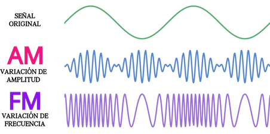
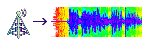
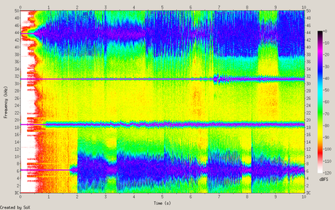
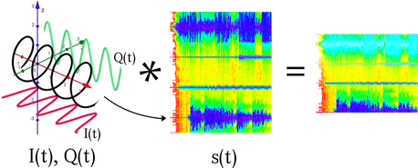
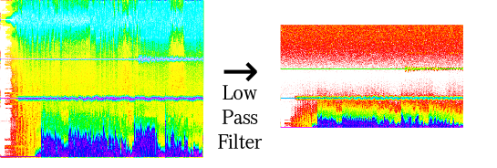
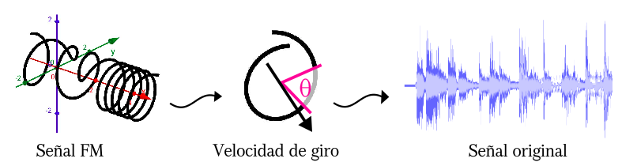

POR FAVOR NO USE AUDIFONOS. Esta página simula la experiencia completa de fingir escuchar la radio. La música se modula en ondas de radio y viaja por un pequeño espectro inventado. Al final una radio imaginaria y bien peye la sintoniza y decodifica en tiempo real, todo en el navegador.
El proceso en detalle
Modulación:
Para que una estación transmita datos por el espectro tenemos que elegir primero una frecuencia base (portadora), de ahí que los locutores digan "Transmitiendo desde Manizales en los 91.7MHz".

Luego decidir entre codificar el sonido en AM y FM depende de si queremos largo alcance (AM) o alta calidad (FM).
- Estación AM: La señal original modifica la amplitud de la portadora así:
- Estación FM: La señal original modifica ligeramente qué tan rápido oscila la portadora:
Cabe resaltar que mientras esta página fríe tu CPU con FM, en la vida real existen circuitos especializados que realizan esta traducción en tiempo real y expelen el resultado como ondas de radio. (Luz, aunque de baja frecuencia y por tanto invisible y capaz de atravesar algunos objetos)

Al final el espectro percibido se compone de la suma de todas las salidas de las estaciones, lo cual se puede ver claramente al analizar las frecuencias en el tiempo:

Demodulación:
Ahora bien, a la antena llegan todas las estaciones mezcladas. Así que primero debemos aislar únicamente la frecuencia que queremos escuchar.

Para ello generamos un oscilador a la frecuencia portadora de la estación elegida.
En realidad son dos ondas llamadas I y Q, desfasadas 90° entre sí para poder recuperar mejor la señal.
Al multiplicarlas por separado con la señal de la antena, las frecuencias cercanas a la emisora seleccionada se desplazan hacia 0Hz, mientras las demás quedan desalineadas y se atenúan.

Para este punto tenemos la señal FM original mas un ruido de alta frecuencia. Este se quita con un Filtro de paso bajo.

Ahora tenemos dos versiones filtradas de la señal: I(t) y Q(t). Juntas forman un punto girando en un espacio. La velocidad de ese giro representa directamente la frecuencia instantánea de la FM. Así que para recuperar el audio solo medimos cuánto rotó la señal entre un instante y el siguiente.
Por último aplicamos otro filtro de paso bajo al audio final y listo.